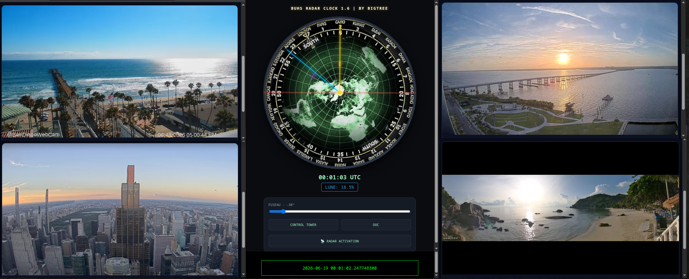

WHAT IS THE CONTROL TOWER?
The Control Tower sits at the very crown of the BigTree architecture. Designed as a lightweight, pure JavaScript/HTML portal, it aggregates real-time webcams, specialized radio feeds, and the iconic BigTree Radio into a seamless visual nexus.
Forget tab switching and clutter—Control Tower offers effortless, zero-friction navigation through embedded global streams. From the golden hour in Rio to midnight neon in Tokyo, or monitoring the active Kīlauea volcano in Hawaii, experience the planet's heartbeat in real time.
"By continuously observing atmospheric and geophysical live streams, Control Tower users have successfully predicted Kīlauea eruptions three times—a day before official spikes."
LIVE MATRIX SIMULATOR [ONE-CLICK ZAPPING]
Simulated low-latency iframe zapper without tab clutter.

LIGHTWEIGHT PURE JS
No bulky frameworks, zero heavy npm overhead. Control Tower runs entirely as a minimal single page HTML/JS module for maximum efficiency.
AZIMUTHAL RADAR
Integrated single yellow-needle solar radar to track exact live daylight and solar trajectory across global time zones simultaneously.
METATRON OVERWATCH
Positioned at the highest crown of the BigTree architecture. A total, omnipresent visual perspective on planetary developments.